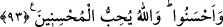

“İçki kötülüklerin anasıdır.”[40] buyurmuştur. Çünkü bahsettiğimiz bütün bu kötülükler
içkiden kaynaklanmaktadır.
Kumar ise pek çok kötü huyun galeyana gelmesine sebep olmaktadır. Bunlar hırs,
cimrilik, kibir, öfke, düşmanlık, kin, kıskançlık, hased ve benzeri kötü huylardır. Bütün
bu kötü huylarla insan dosdoğru yoldan sapar.
Dikili taşlar, yani putlar ise Allah Teâlâ’dan başka tapılan her şeydir. Bunlar, kulu
Allah’a şirk koşar hale getirirler.
Fal oklarına gelince, Allah Teâlâ’dan başka hayır ve şer, fayda ve zarar umularak
müracaat edilen dalalete düşürücü şeylerin tamamıdır. Oysa zarar veren (ed-Dârr) veya
fayda veren (en-Nâfi’) sadece Allahtır.
Allah Teâlâ daha sonra bunlar “şeytan işi birer pisliktir” buyurmuştur. Yani bu
bahsedilen dört şey, şeytanın kulları kandırarak doğru ve hak olan yoldan saptırdığı
işleri arasında en pis olanlardır, demektir.
“Bunlardan sakının.” Yani şeytandan sakının; onun vesveselerini kabul etmeyin ve bu
çirkin amelleri terk edin “ki kurtuluşa eresiniz.” Şeytanın hilelerinden ve bu işlerin
pisliklerinden kurtulabilesiniz.
et-Te’vîlatü’n-Necmiyye’de böyle geçmektedir.
93. Îman edip de salih amel işleyenlere, hakkıyle sakındıkları, îman ettikleri ve
sâlih ameller işledikleri, sonra yine hakkıyle sakındıkları ve îman ettikleri, sonra da
hakkıyle sakındıkları ve yaptıklarını ihsan üzere yaptıkları takdirde (haram
kılınmadan önce) tattıklarından dolayı günah yoktur. Allah iyi ve güzel yapanları
sever.
“Îman edip de salih amel işleyenlere” bundan sonra haramlardan “hakkıyle
sakındıkları, îman ettikleri ve salih ameller işledikleri”, bu îman ve sâlih amellere
devam ettikleri, “sonra” önceden mübah olduğu halde sonradan kendilerine haram
kılınan şeylerden “yine hakkıyle sakındıkları ve” bunların haram olduğuna “îman
ettikleri, sonra da” önce mübah oldukları halde sonradan haram kılınan şeylerden
“hakkıyle sakındıkları” için günah ve zorluk yoktur. Yedikleri şeyin önceden mübah
oluşuna değil de, “nesh” yoluyla hükmünün kaldırılışını dikkate alarak, yedikleri anda
mübah olmasına dikkat ettikleri “ve yaptıklarını ihsan üzere yaptıkları”; yani
zikredilen kalbî ve bedenî, iyi ve güzel ameller işledikleri “takdirde” içki içmek ve
kumar, malı yemek de dahil olmak üzere önceden “tattıklarından dolayı” “günah” ve